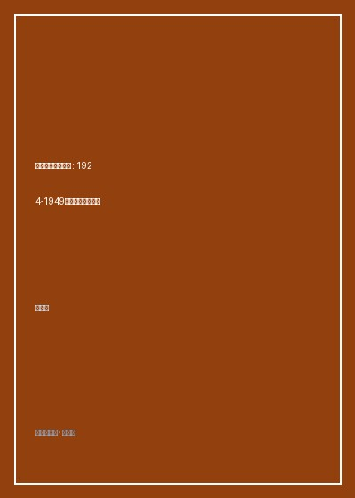

《党员、党权与党争》

总体观点
彻底颠覆传统将国民党视为强大极权专制机器的简单刻板印象，王奇生通过海量一手密档实证揭示国民党政权的本质是‘弱势独裁’。其虽有以党治国、领袖独裁之名，但在组织形态上却从未建立起能够有效穿透基层乡村的严密动员网络，形成了‘政权悬浮于社会之上’的致命内伤。
剖析国民党党员构成的畸变与党权运作的结构性死穴。大革命清党之后，国民党迅速丧失了工农群众基础，党员演变为脱离基层的军警、公务员与地方土豪劣绅的官僚联盟；基层党部不仅毫无社会号召力，反而在与行政官僚、地方军阀的争权夺利中被彻底边缘化与‘空壳化’。
党内派系纷争（党争）是国民党组织难以愈合的附骨之疽。从西山会议派、改组派到CC系、复兴社，国民党内部始终缺乏具有制度约束力的民主纠错机制与凝聚共识的核心政治纲领。不同派系围绕人事任免、财政拨款与特务机关大搞暗斗，导致政权在面对全面抗战与内战生死考验时组织力土崩瓦解。
核心观点
-
1. 以党治国口号下的党政脱节
孙中山设想的是俄式列宁主义政党，以党统政、以党领军；然而在蒋介石政权建立后，实际权力迅速向军事统帅部与行政官僚倾斜，国民党各级党部沦为毫无实权的清谈机构与盖章橡皮图章。
地方县党部书记长向省党部上报抱怨：县长常常直接扣押党部活动经费，地方警察公然把党部传单撕毁丢进垃圾桶，所谓‘以党治国’在基层沦为天大笑话。 -
2. 清党后基层社会的全面失守
1927年‘清党’不仅重创了中共，同时重创了国民党自身最具理想主义与革命活力的青年左翼力量。清党后国民党蜕化为排斥平民参与的特权小圈子，将中国最广阔的农村底层彻底拱手相让。
档案统计显示清党后许多县党部党员人数从数千人锐减至几十人，且平均年龄暴增，留下来的全是不敢开展群众运动、只求保住饭碗的庸懦官僚。 -
3. 党员成分官僚化与利益寄生
三十年代国民党为了扩充数字推行强制集体入党，公务员、中小学教师与铁路职工不入党就扣发薪金或面临辞退。这种‘公职化党员’毫无信仰可言，入党完全是为了谋求官位与自保。
调查报告显示绝大多数普通党员连《三民主义》核心内容都背不出来，党费必须依靠财务科直接从月薪中代扣，一旦发生战乱撤退，党员册页随地丢弃无人过问。 -
4. 派系恶斗内耗耗尽党内元气
蒋介石为了巩固个人独裁，在党内采取‘分而治之、相互制衡’的权术策略，蓄意纵容CC系掌管党务教育、政学系掌管政务外交、军统与中统分立相互暗杀监视，使整个体制在内部倾轧中消耗了九成精力。
在抗战大后方重庆，中统与军统特务为了争夺对地下黑市烟土走私的查缉权，甚至在繁华市区当街拔枪火并，成为市民茶余饭后的讽刺谈资。 -
5. 乡村政权悬浮与动员机器停摆
国民党政权始终无法将征税与征兵触角直接深入到保甲之下的普通农户，必须依赖保甲长与乡绅地霸作为包税中介。这导致上级政令在下达过程中遭遇层层截留盘剥，激起民怨沸腾。
抗战时期国民党拉壮丁抓兵，有钱人家花钱买通保长顶替，穷苦农民被麻绳串绑游街、未至前线便在收容所因饥寒疾病死亡过半，彻底丧失了民心根基。
全书结构
-
第一章 孙中山改组国民党与以俄为师
回顾1924年国民党一大改组，分析苏联顾问鲍罗廷如何将布尔什维克列宁主义政党模式嫁接进涣散的国民党躯体。
对比改组前国民党只是一群松散政客依靠江湖会党盟誓，改组后通过黄埔军校与严密支部组织迅速打造出一支能打胜仗的党军核心。 -
第二章 清党风暴与党内生态的断崖剧变
以详实的伤亡与退党档案，全景记录1927年南京、上海、武汉清党清洗过程，剖析激进革命动力为何瞬间冻结。
分析浙江等模范省份在清党过程中如何发生扩大化灾难，老同盟会元老与激进青年学生被扣上‘共党嫌疑’帽子惨遭错杀清洗的惨剧档案。 -
第三章 党员队伍：阶层构成、入党动机与凝聚力
运用量化社会学方法统计三十年代数十万国民党党员的职业分布、文化程度、年龄与地域，戳破其‘革命先锋队’的虚妄幻象。
数据图表显示公教人员与军队军官在党员构成中占比高达70%以上，产业工人与佃农党员占比不足1%，坐实其纯粹的‘官僚食禄者联盟’本质。 -
第四章 党政关系：以党治国的理想与沦落
追踪省、县两级党政权力博弈，记录‘党部治国’口号如何被行政长官与军事长官以维持战时秩序为由无情踩在脚下。
县党部试图弹劾贪腐县长，县长直接命令保安团荷枪实弹将党部大门查封并驱逐党务指导员，生动展现枪杆子面前党权的虚弱苍白。 -
第五章 党争派系：分裂、倾轧与自毁之途
详尽还原CC系（陈果夫、陈立夫兄弟）、改组派（汪精卫）、胡汉民派系以及三青团与母党之间的惨烈内斗全流程。
解析抗战胜利后国民党六大代表选举中，各派系为了争夺中央委员席位大肆印制假选票、在会场大打出手的丑闻档案记录。 -
结语：一个弱势独裁政党的终局
全书思想升华，总结国民党在大陆二十二年统治的历史教训：一个缺乏坚定信仰、没有基层根系且内耗不休的政权，必在历史大考中被彻底淘汰。
总结三大战役期间国民党前线将领因派系私怨见死不救、后方金融金圆券彻底崩溃的系统性组织总崩盘图景。